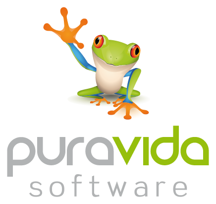
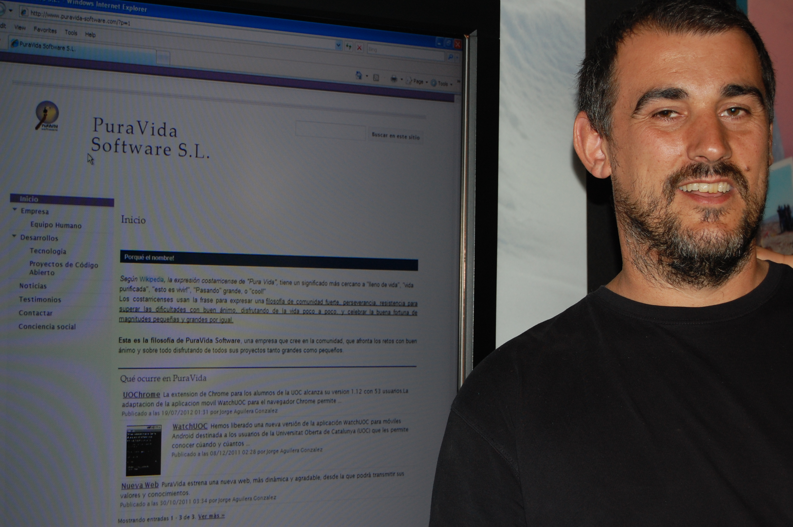
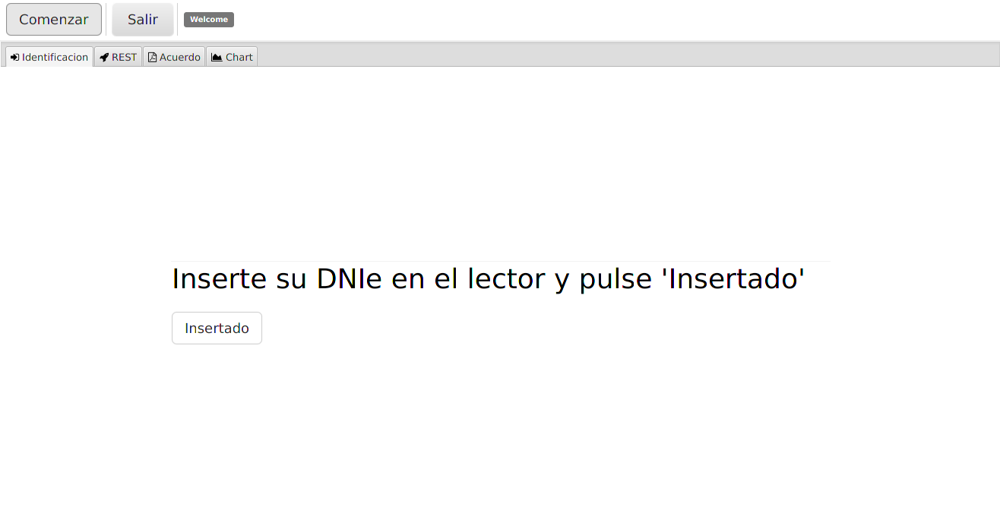

lazybones create griffon-javafx-java sample-javax-java
gradle build
gradle test
gradle runJorge Aguilera, +20 años dándole a la tecla |
|
|
|
 |
y desde hace +9 años como freelance (a.k.a. chico para todo) en Puravida Software |
 |
9 de cada 10 arquitectos software recomiendan una aplicación web ….
RCP = Rich Client Platform
Usando directamente Swing, JavaFX, …
NetBeans RCP
Eclipse RCP
Griffon
Entorno de desarrollo de aplicaciones de escritorio inspirado en Grails.
Quick Start = lazybones
Diferentes entornos (Swing, JavaFX, Apache Pivot) y lenguajes (Java, Groovy, Kotlin)
Inspirado en Grails Framework, presenta numerosas similitudes (Controller, View, Services, DI, …)
Ejecutable en consola, desde web (JNLP), instalable (IzPack, RPM, zip, tar), firmado, …
Groovy, Gradle, JUnit, Spock, AsciiDoctor … en la punta de tus dedos
lazybones create griffon-javafx-java sample-javax-java
gradle build
gradle test
gradle rungriffon-app
src
main
integration-test
@ArtifactProviderFor(GriffonModel)
class ChartModel {
@FXObservable Integer clickCount = 0
@FXObservable
ObservableList<PieChart.Data> pieChartData = FXCollections.observableArrayList()
}@ArtifactProviderFor(GriffonController)
class ChartController {
ChartModel model
@Threading(Threading.Policy.OUTSIDE_UITHREAD)
void recalculateAction() {
// Long operation
// ...
runInsideUIsync{
model.pieChartData.clear()
model.pieChartData.addAll(datas)
}
}
}@ArtifactProviderFor(GriffonView)
class ChartView extends AbstractJavaFXGriffonView{
FactoryBuilderSupport builder
ChartModel model
ChartController controller
void initUI() {
builder.with{
content = fxml(resource('/com/puravida/chart.fxml'))
}
}
}mvcGroups {
// MVC Group for "sample"
'sample' {
model = 'sample.SampleModel'
view = 'sample.SampleView'
controller = 'sample.SampleController'
}
}void showMemberInfo(){
createMVCGroup( 'memberInfo', [ member: model.member ] )
}void mvcGroupInit(Map<String, Object> args) {
this.name = args.member.surname+","+args.member.name
}Al estilo de Grails podemos definir Servicios:
@javax.inject.Singleton
@ArtifactProviderFor(GriffonService)
class SampleService {
int calculate(){
...
}
}e inyectarlo en el controller que lo necesite
...
class SampleController{
@Inject
SampleService sampleService
...
}La gestión de hilos en cualquier aplicación es crucial, y en una aplicación gráfica aún más si cabe. No podemos dejar "congelada" la aplicación mientras realizamos cálculos en el hilo gráfico.
Griffon nos permite ejecutar código en el hilo correspondiente de una forma realmente fácil.
Ejecución síncrona en el hilo gráfico runInsideUISync o @Threading(Threading.Policy.INSIDE_UITHREAD_SYNC)
Ejecución asíncrona en el hilo gráfico runInsideUIAsync o @Threading(Threading.Policy.INSIDE_UITHREAD_ASYNC)
Ejecución fuera del hilo gráfico runOutsideUI o @Threading(Threading.Policy.OUTSIDE_UITHREAD)
Griffon nos permite la comunicación entre componentes mediante eventos:
application.eventRouter.publishEvent('MyEventName', ['arg0', 'arg1'])
application.eventRouter.publishEventOutsideUI('MyEventName', ['arg0', 'arg1'])
application.eventRouter.publishEventAsync('MyEventName', ['arg0', 'arg1'])
class MyController {
void onMyEventName( args )
println args
}
}Griffon nos proporciona un sistema de internalización típico mediante:
application.messageSource.getMessage('groovy.message', ['apples', 'bananas'])
e incluso nos permite usar scripts de Groovy:
import griffon.util.Environment
warning.label = { args ->
if (Environment.current == Environment.PRODUCTION) {
"The application has encountered an error: $args"
} else {
"Somebody sent us a bomb! $args"
}
}// Extracto de test en JavaFX
@TestFor(SampleController.class)
public class SampleControllerTest {
@Rule
public final GriffonUnitRule griffon = new GriffonUnitRule();
@Test
public void executeSayHelloActionWithNoInput() {
...
}
}// Extracto de test en Swing
import spock.lang.Specification
public class SampleIntegrationSpec extends Specification{
@Rule
public final GriffonFestRule fest = new GriffonFestRule()
void 'Get default message if no input is given'() {
given:
window.textBox('inputField').enterText('Griffon')
when:
window.button('sayHelloButton').click()
then:
window.label('outputLabel').requireText('Hello Griffon')
}
}Griffon cuenta con un extenso ecosistemas de plugins:
Además del típico MVC Griffon permite utilizar otros patrones como son:

Aplicación de ejemplo:
mvcGroups {
// MVC Group for "griffdnifx"
'griffdnifx' {
model = 'com.puravida.GriffdnifxModel'
view = 'com.puravida.GriffdnifxView'
controller = 'com.puravida.GriffdnifxController'
}
'login'{
model = 'com.puravida.LoginModel'
view = 'com.puravida.LoginView'
controller = 'com.puravida.LoginController'
}
'rest'{
model = 'com.puravida.RestModel'
view = 'com.puravida.RestView'
controller = 'com.puravida.RestController'
}
'agreement'{
model = 'com.puravida.AgreementModel'
view = 'com.puravida.AgreementView'
controller = 'com.puravida.AgreementController'
}
'chart'{
model = 'com.puravida.ChartModel'
view = 'com.puravida.ChartView'
controller = 'com.puravida.ChartController'
}
}...
Stage stage = builder.application.primaryStage
stage.maximized = true
stage.onCloseRequest = { windowEvent ->
windowEvent.consume()
}
...Griffon inyecta dependencias y gestiona dependencias entre controller hijo y padre
void initUI() {
FontAwesomeIcon icon = new FontAwesomeIcon(FontAwesome.FA_FILE_PDF_O)
builder.with{
tab(id:'mainTab', application.messageSource.getMessage('agreement'),
graphic:icon, closable:false){
borderPane{
top(align: 'center', margin: [0, 20, 20, 20]){
button text: 'Acepto', userAgreeAction
}
center(){
browser = webView(prefWidth: 200)
}
}
}
}
String url = application.resourceHandler.getResourceAsURL('web/viewer.html')
url += '?file=MadridGUG.pdf'
builder.browser.engine.load(url)
parentView.tabPane.tabs.add(tab=builder.mainTab);
}(solo JavaFX)
void initUI() {
builder.with{
content = fxml(resource('/com/puravida/restview.fxml')) {
bean(labelNif, text: bind(model.nifProperty))
...
}
}
connectActions(builder.content, controller)
...
}@Threading(Threading.Policy.OUTSIDE_UITHREAD)
void next(){
wsliteHandler.withRest([url: url], { Map<String, Object> params, RESTClient client ->
Response response = client.get(path: "/",accept: ContentType.JSON)
runInsideUIAsync{
model.list.add(RestModel.fromJson(response.json))
}
})
}Integración del DNIe
...
provider = new DnieProvider(new SmartcardIoConnection())
Security.addProvider(provider)
final KeyStore ks = KeyStore.getInstance('DNI')
final CallbackHandler callbackHandler = new DnieCallbackHandler()
final KeyStore.LoadStoreParameter lsp = new KeyStore.LoadStoreParameter() {
@Override
public KeyStore.ProtectionParameter getProtectionParameter() {
return new KeyStore.CallbackHandlerProtection(callbackHandler)
}
};
ks.load(lsp)
def privateKey = (PrivateKey) ks.getKey('CertAutenticacion', null)
...Firma de Pdf mediante Apache Pdfbox
...
final PDDocument doc = PDDocument.load(fDestination)
final PDSignature signature = new PDSignature()
doc.addSignature(signature, new SignatureInterface() {
@Override
byte[] sign(InputStream content) throws IOException {
List<Certificate> certList = [dnie.certificate]
Store certs = new JcaCertStore(certList)
...
ContentSigner sha1Signer = new JcaContentSignerBuilder("SHA256WithRSA").build(dnie.privateKey);
...
}
}
.../